给大家出一道题目：
请你向一个出生就看不到任何东西的盲童解释什么是红色、蓝色和棕色？
你可以发挥脑洞好好想一下。
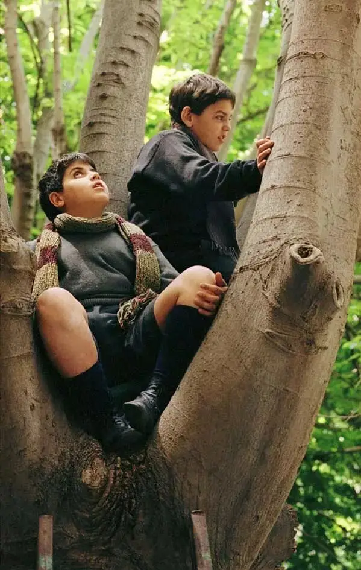
一个可爱的小孩曾这么回答：
蓝色像是骑脚踏车时风吹在你脸上的感觉,或是..像海。
棕色,摸摸看,棕色像这树干,很粗糙吧?
红色像火一样，像是太阳下山的天空。
这个情节来自于电影《听见天堂》，豆瓣评分高达8.9。
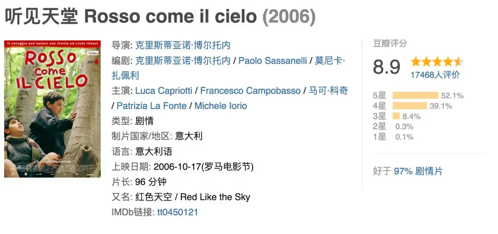
回答问题的小孩叫米可，他非常聪明，通过描述触觉来让另一个盲童感知无法拥有的视觉。
天资聪颖的米可并非天生就是个盲人。
因为调皮，他偷玩父亲的猎枪，可是猎枪走火，米可因此失明。
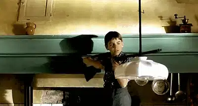
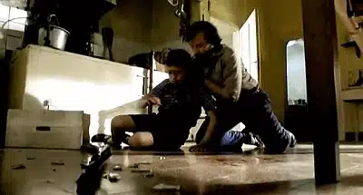
失明后，父母不得不忍痛将米可送入一所特殊学校。
这是一个教会学校，里面的孩子都是盲童，就连校长也是一个盲人。
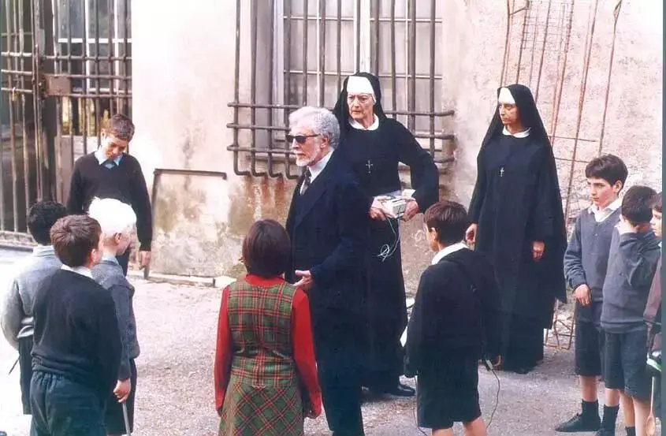
学校的主要目的就是帮助这些盲童学会一门谋生的技能，接电话做客服或者做个纺织工。
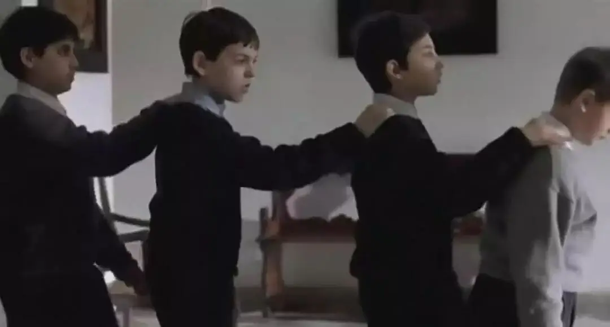
曾经拥有过光明的米可一时无法接受现状。
他上课发脾气，不配合老师的教学，不愿意像个傻子一样摸着、闻着一株植物来认知世界。
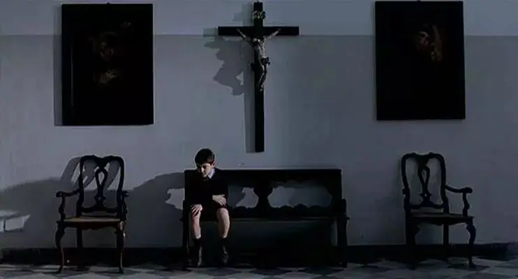
幸运的是，米可遇到了改变他一生命运的唐老师。
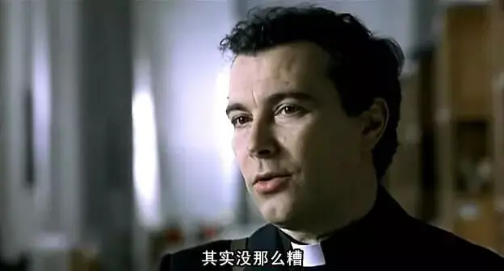
唐老师告诉米可：
我也能看见，这远远不够，当你看到一朵花，你不想去闻闻它的味道吗？下雪时，你不想走在上头吗？捧着它，看着它在你的手中融化。
告诉你一个秘密，我注意到音乐家在弹奏时，他们会把眼睛闭上，为什么？
这样可以感受更强烈的音乐，音符会蜕变，变的更有力量，音乐仿佛变成具体的触觉。
你有五个感官，为什么只用一个呢？
处于低谷中的米可不仅感受到了唐老师的包容和爱，同时也受到了老师的启发。
他开始接受自己的现状，努力去适应新的生活。
也决定竭力完成唐老师布置的作业：用一个作品去表达你对自然的感受。
一天，米可无意间在办公室发现了一台录音机，他立刻想到了一个好主意。
他用录音机收录淋浴的声音模仿下雨声。
通过揉搓金属发出的声音模仿雨打遮雨板的声音。
他还收录了好朋友普利契模仿蜜蜂的声音。
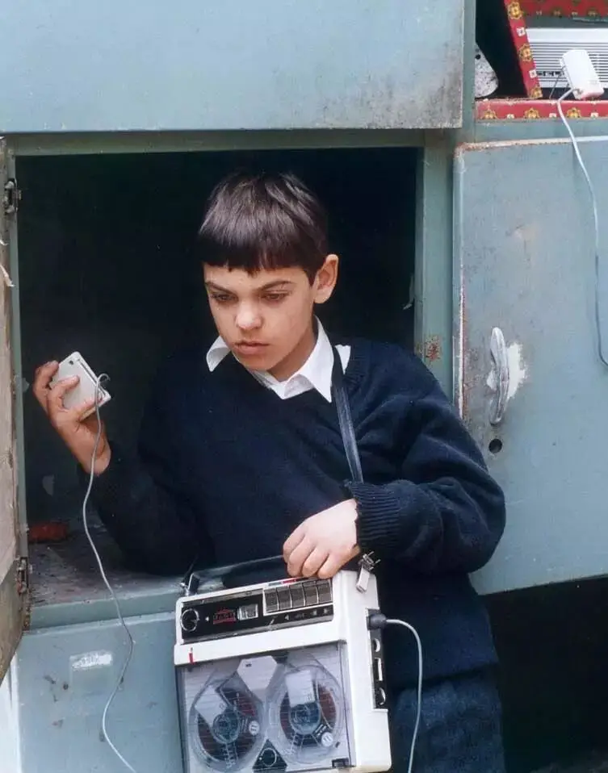
最终，米可将这些声音带剪辑在一起，呈现了一个“雨后初晴”的故事：
这是一个电闪雷鸣的世界，外面下着瓢泼大雨，这场大雨将一个小孩困在家中，他只能安静等待.....
不多时，雨水渐渐变小直至彻底停歇，小孩开心地跑到外面，呼吸着新鲜的空气，微风轻抚着他的面庞，嗡嗡作响的小蜜蜂在花丛中飞来飞去.........
这份美好，正是经历失明又重新拥抱希望的米可的内心写照。
他对于声音所表现出来的天赋和想象力惊艳了唐老师。
但米可却遭到了校长的处罚和泼冷水。
因为米可用了学校的教学录音带。
看着灰心躲在床下的米可，唐老师用他的诙谐和真诚再次鼓励了米可，并送给米可一台新的录音机。
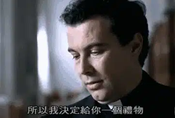
对于一个孩子，一个老师的肯定可能就是他的全部。
米可再次重拾兴趣和天赋。
为了迎接马上到来的家长见面会，他秘密策划了一个更大的节目。
这次他要用声音和音效来讲一个王子拯救公主的冒险故事。
越来越多的盲童被米可的点子吸引，纷纷加入其中。
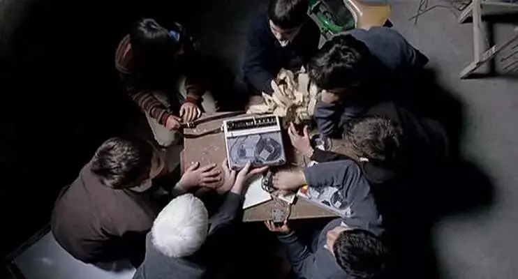
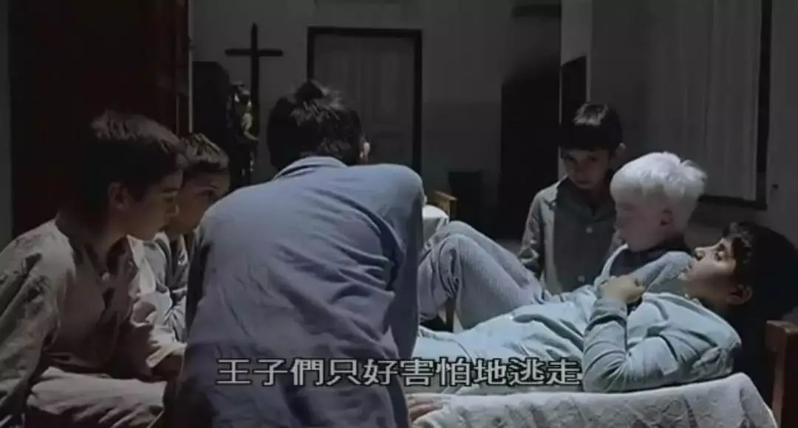
为了录到逼真的音效。
他们跑到钢铁厂录机器运行的声音，那个声音像极了怪兽的叫声。
孩子们挥舞着汤勺、棍棒模仿着王子和邪恶势力战斗的场面。
米可则不断变化着距离和走位收录着这些声音，效果堪比电影音效。
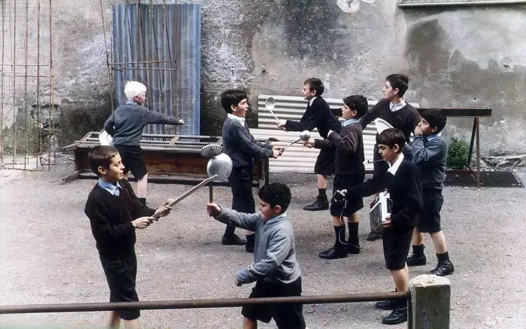
可是，他们的事情被校长发现了，米可面临被开除的厄运........
这是一个关于声音的电影，故事情节并不复杂，也没有故意煽情，但却让人很感动。
因为这些盲童唤醒了我们曾经失去的东西，那是一种孩子般的好奇与敏感。
曾几何时，我们也像他们一样，用全身的器官去触摸和认知身边的一切。
但是随着知识的加增，我们发现奇迹的能力却在丧失。
我们穿行于上下班的地铁里，总是执着于自我的忙碌和焦虑中，但对身边的一切失去了感知的能力。
虽然我们拥有健康的五官，但却是一个真正的瞎子和聋子。
我们看不到盛开在房角的花朵，我们听不到微风吹动的声音，我们对一切都失去了好奇，像一个行走的尸体一样麻木不仁。
如果我们都没有时间去认真感受上帝的创造，我们又怎么更深地认识上帝呢？
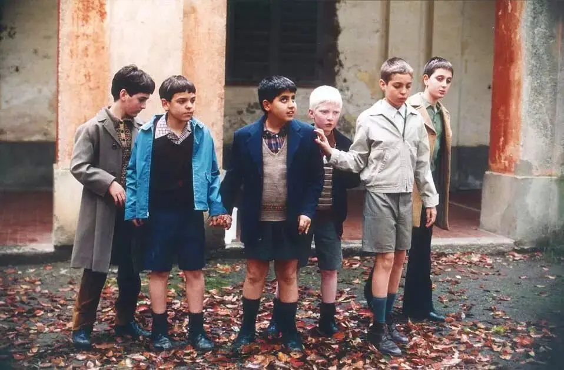
而本片最引人深思的是，唐老师和校长对米可的不同态度。
当米可将福音书的录音带洗掉去录制自己作品的时候，校长非常生气，因为这不仅是破坏了学校的规矩，更是对信仰的亵渎。
但是校长对于米可的不当行为只是止于律法性的指责，里面却没有恩典和慈爱。
这也是我们在信仰中容易发生的问题：有知识却没有真实的经历和感受，有律法却没有真实的饶恕，只看重理性思辨和教条却忘记情感和恩典。
大家会因此变得越来越喜欢用道理去审判别人。
当到了一定程度，每个人在其中无法表达自己真实感受的时候，真理有时候会变成一种伤害和虚伪。
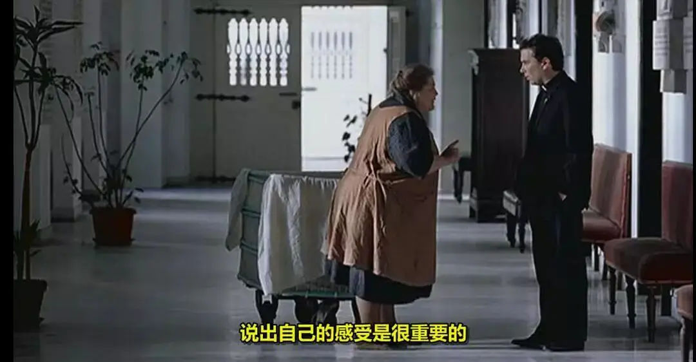
当耶稣面对沉睡愚笨的门徒时，耶稣虽有责备，而更多的是陪伴和恩典。
所以门徒才能慢慢认识真理。
倘若耶稣看到门徒的毛病立马加以审判的时候，门徒就连站立的机会也没有，更谈不上可以有机会去悔改。
而校长之所以没有恩慈，是因为他从没有真正地接受真实的自己。
作为一个盲人，校长对自己的遭遇有苦毒，他认为一个盲人就是低人一等，就只配做一些低级的工作，你最好不要对自己有过高的奢望。
正是这样的执念，校长总是冷若冰霜，根本无法拥抱米可的天赋和作品。
当唐老师质问校长，为什么小孩子不可以用这样的方式表达自己的时候。
校长恶狠狠地说，因为他们是盲人。
其实，校长憎恨的一直是作为盲人的自己。
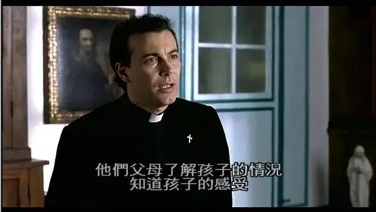
而唐老师却由衷的欣赏着米可的天赋，他用爱心包容着这个桀骜不驯的天才，用诙谐和智慧启发着米可的潜力。
而这种春风化雨般的温暖也确实创造了奇迹。
米可的故事是真实的。
他日后成长为意大利国宝级的音响设计师，曾为上百部电影设计音效，他的音效跟着这些电影在各大电影节大放异彩。
他还成立了自己的音乐录制公司，曾为很多意大利顶尖的歌手录制唱片。
| 米可.曼卡西
凭着对声音独特的天赋，米可.曼卡西发明了环形音响系统，该系统受到杜比音响创始人的极大肯定，日后有很大的潜力应用于杜比全景声。
2001年开始，米可.曼卡西更是四处发表演讲，发起活动对抗世界上第二种污染物 ——噪音污染。
他的斗争越来越引起人们对于噪音污染的广泛关注和讨论。
而米可.曼卡西能够有如此大的突破和成就，都不得不归因于诙谐幽默的唐老师。
每个孩子都是独一无二的存在，我们缺的只是能够发现这些奇迹的老师。
关注并回复：听见天堂
获取电影资源
相关推荐：
奥斯卡影帝，你把自己演死了
73年过去了，纳粹离我们有多远？
这是一部无神论永远都看不懂的获奖电影！
这里没有挑逗你眼目情欲的小鲜肉
也没有挑动你肉体情欲的段子
更没有膨胀你今生骄傲的鸡血
我们只在乎那些最质朴真诚的作品
在那里我们才能恢复真正的想象力
我们也坚信这才是我们真正需要的

ID:Six_hundred_hits
长按二维码，一键关注
【六百击】
-END-
电影评论
尽情分享朋友圈

苹果打赏
通道
小提示：文末广告是腾讯配送广告，内容与本号无关，但您的每次点击（无需反复点）都会给平台带来几毛收益，欢迎您点击支持六百击。